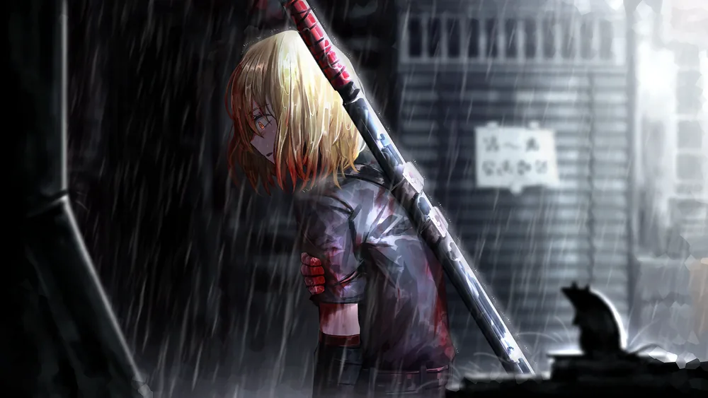

Prepared Mind
Gain Haste by (Wrath Reson./3) next turn.

Catch Breath
Dual Strike
Overbreathe
Evade
Gain Haste by (Wrath Reson./3) next turn.
1 ally with the fastest Speed deals +10% Slash damage.
Identity Acquisition
Hurrah, justice hath arrived! I shall drive all villains into equal demise!
Morning Greeting
Shh, quiet Manager Esquire. I was practicing mine ambush maneuvers. Could you hear my footsteps?
Afternoon Greeting
You see, Manager Esquire, I aspire to persevere through the storms cast by the world. It ought to be worth the turmoil, as there are more stars in the sky than bare eyes can see.
Evening Greeting
I feel the passion from mine youth rekindle when I gaze upon the bright moon.
Chatter #1
Perhaps villains are closer to us than one might have thought. Ah, 'tis meaningless rambles. Forget that I spoke.
Chatter #2
It did take me tremendous pains to learn to strike one's foe with nary a sound.
Chatter #3
Hm? I appear fraught with gloom to the eyes? Surely, you are mistaken. I was merely lost in contemplation.
Post-Uptie Chat 1
Manager Esquire, I thought that all men fought righteous battles in the name of justice as I do. All this complication of political intricacies and derived factions... They're beyond my grasp...
Post-Uptie Chat 2
The task of middle management... is truly an ardous one, especially for the mind... Have you endured this struggle as well, Manager Esquire?
Idle
Have you hidden yourself among the shadows?
Uptie
I.. shall exert greater efforts! Watch me, Manager Esquire!
Deployment
I shall pursue yon evildoers!
Stage Entry
What vile deeds have those villains done?
Viewed in Battle
I was preparing a surprise attack- you were able to detect me?
Commencing Attack
Let us vanquish these evildoers!
Enemy Stagger
You shan't be let a moment of clarity!
Staggered
Ack...
Enemy Killed
I slew them!
Ally Death
I shall avenge thee and vanquish that villain!
Check Passed
My justice bore fruit!
Check Failed
Nay, I shan't submit!
Victory Cry
Justice shall flourish under the moonlight!
Extra Conditions Fulfilled
On the darknest night, the brightest star is born! Now is one such moment!
Defeat Wail
I am certain no longer. The moon wanes. Is there hope of justice's fulfillment?
Sumber data: Limbus Company Wiki. Angka dan teks mengikuti versi wiki saat situs ini dibangun.